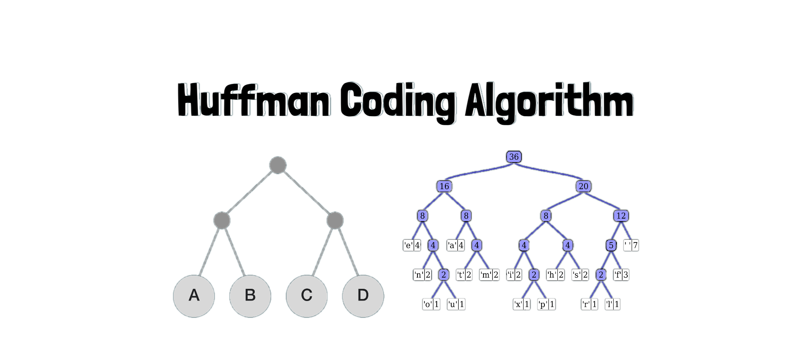

GM / Cruise - AI/ML Software Engineering Intern
Work on a Simulation Evaluation team for autonomous vehicles, building tools that make AV scenario review faster and easier to trust. Built a multimodal vision-language validation pipeline that turns road and simulation video into side-by-side review artifacts, plus fidelity benchmarks for vehicle behavior, road geometry, traffic controls, and visual defects. Helped triage 2,000 scenarios, surface 100 priority simulations, and reduce review effort by 95%.

Cross-Lingual Claim Span Identification
Built a multilingual NLP pipeline to find exact claim spans in English, Spanish, and French text using BIO token classification. Compared CRFs, XLM-RoBERTa with LoRA, transformer-plus-CRF hybrids, and RoBERTa baselines. XLM-RoBERTa with LoRA performed best, while CRF decoding struggled with rare claim-start tokens under heavy class imbalance.

Huffman Coding Algorithm(Java)
Enforced a data compression algorithm, Huffman coding algorithm, to decode and code files. Priority queues and search trees were used to reduce file size by respectively accounting for character occurrence frequency in the inputted file and ASCII value memory cost.
Curiosity-Driven Pokemon FireRed Agent
Developed an autonomous Pokemon FireRed agent using a Lua-Python pipeline with the BizHawk emulator. The agent reads GBA memory, switches between overworld and battle contexts, and chooses actions through interpretable perceptrons, Hebbian learning, curiosity-driven exploration, and Markov matching from human demos. In evaluation, it navigated 11 maps from Pallet Town into Viridian Forest and reached a 77.8% battle win rate.